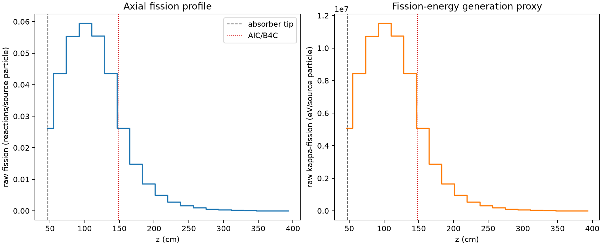
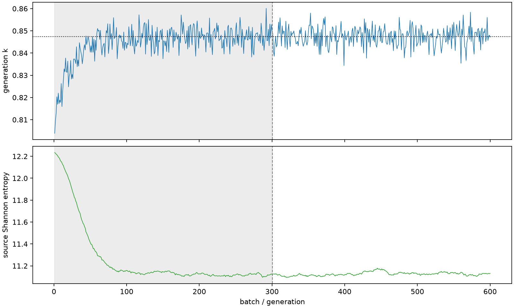

| field | value |
|---|---|
| experiment | V2-ADAPTIVE_01-0002 |
| k | 0.8473565925064491 |
| MC standard error | 0.00017702546966246913 |
| seconds | 963.5819445860106 |
| acceptance | not_assessed |
| convergence | review_required |
Completed is output integrity only; physical and statistical review required. Zero tallies do not prove zero production or zero uncertainty.
| diagnostic | value |
|---|---|
| geometric fuel voxels | 5280 |
| zero fission tally voxels | 0 |
| low signal fuel voxels | 770 |
| low signal fission share | 0.0002123235568835459 |
| low signal kappa share | 0.00021234471460349422 |
| important fission share | 0.9500638615232424 |
| previous filter included | 4510 |
| duration estimate s | 1562.5173488400023 |
| actual minus estimate s | -598.9354042539917 |
| fission relative MC error | statistics |
|---|---|
| all_geometric_fuel | {"voxels": 5280, "positive_mean_voxels": 5280, "zero_mean_voxels": 0, "undefined_relative_error_voxels": 0, "median": 0.026795353676045006, "p95": 0.3802228639724914, "maximum": 0.8683677898843111} |
| low_signal | {"voxels": 770, "positive_mean_voxels": 770, "zero_mean_voxels": 0, "undefined_relative_error_voxels": 0, "median": 0.32348717086198286, "p95": 0.5831231934573005, "maximum": 0.8683677898843111} |
| important_95pct | {"voxels": 2190, "positive_mean_voxels": 2190, "zero_mean_voxels": 0, "undefined_relative_error_voxels": 0, "median": 0.008112068172541904, "p95": 0.014582405716238285, "maximum": 0.019942766361943972} |
| outside_previous_filter | {"voxels": 770, "positive_mean_voxels": 770, "zero_mean_voxels": 0, "undefined_relative_error_voxels": 0, "median": 0.32348717086198286, "p95": 0.5831231934573005, "maximum": 0.8683677898843111} |
| kappa_fission relative MC error | statistics |
|---|---|
| all_geometric_fuel | {"voxels": 5280, "positive_mean_voxels": 5280, "zero_mean_voxels": 0, "undefined_relative_error_voxels": 0, "median": 0.026752527298411644, "p95": 0.37936812826512534, "maximum": 0.8665395562511786} |
| low_signal | {"voxels": 770, "positive_mean_voxels": 770, "zero_mean_voxels": 0, "undefined_relative_error_voxels": 0, "median": 0.3228418318363333, "p95": 0.5827558266476237, "maximum": 0.8665395562511786} |
| important_95pct | {"voxels": 2190, "positive_mean_voxels": 2190, "zero_mean_voxels": 0, "undefined_relative_error_voxels": 0, "median": 0.008098772781159834, "p95": 0.014557494620076971, "maximum": 0.01991441290185921} |
| outside_previous_filter | {"voxels": 770, "positive_mean_voxels": 770, "zero_mean_voxels": 0, "undefined_relative_error_voxels": 0, "median": 0.3228418318363333, "p95": 0.5827558266476237, "maximum": 0.8665395562511786} |
| axial bin | fission share | kappa-fission share |
|---|---|---|
| 1 | 0.07600474176051192 | 0.07599812243644352 |
| 2 | 0.12627835342217034 | 0.12627692194199563 |
| 3 | 0.16050984954862335 | 0.16050779562362372 |
| 4 | 0.17237412288361798 | 0.1723720407237442 |
| 5 | 0.1608419028160136 | 0.16083961081658507 |
| 6 | 0.12628963455909048 | 0.12628902818856266 |
| 7 | 0.0758914047587822 | 0.07589674209097105 |
| 8 | 0.04309291464075881 | 0.0430970315354379 |
| 9 | 0.02494762884542321 | 0.024949860162959542 |
| 10 | 0.014295793982136021 | 0.014297289472702205 |
| 11 | 0.008265501817851227 | 0.008266336840744347 |
| 12 | 0.004838805214154848 | 0.00483923054207259 |
| 13 | 0.0028415012222942878 | 0.0028417985566731997 |
| 14 | 0.0016152435261908113 | 0.0016154179649693113 |
| 15 | 0.00090501569471026 | 0.0009051159404777554 |
| 16 | 0.0005215218838689175 | 0.0005215414883949744 |
| 17 | 0.00027351648508126304 | 0.00027354361187241846 |
| 18 | 0.00012854296571974304 | 0.00012855586424268496 |
| 19 | 6.1016238838965823e-05 | 6.1026133323748304e-05 |
| 20 | 2.2987734162060818e-05 | 2.2990064203514055e-05 |
Histories include the inactive-to-active transition at batch 300. kappa-fission approximates fission energy production, not total heat deposition.

